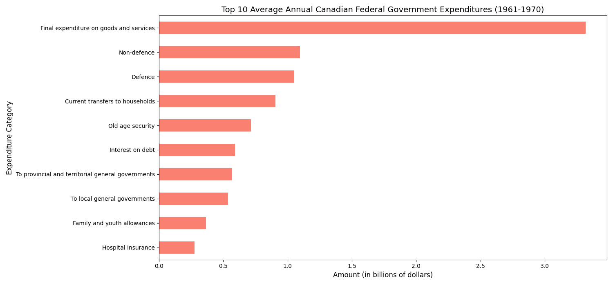
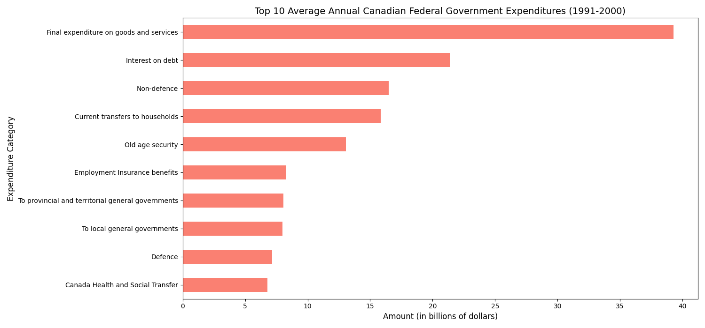
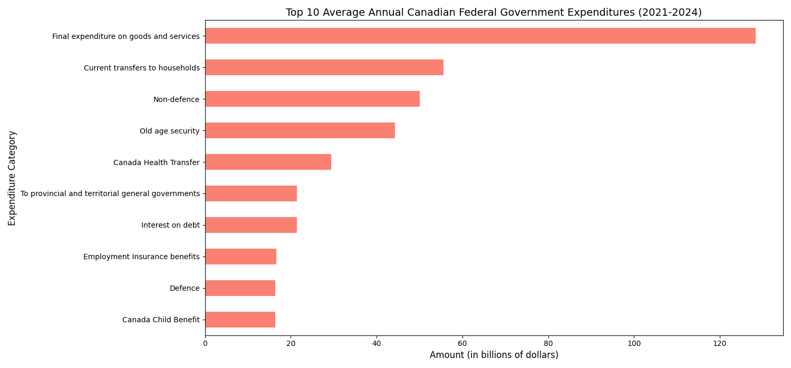
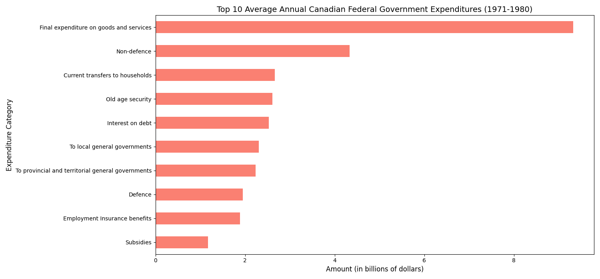
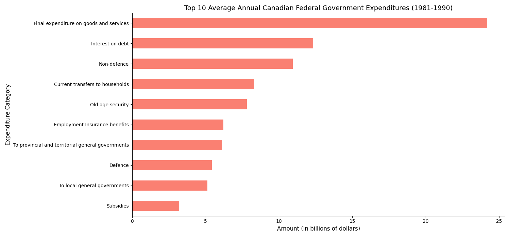
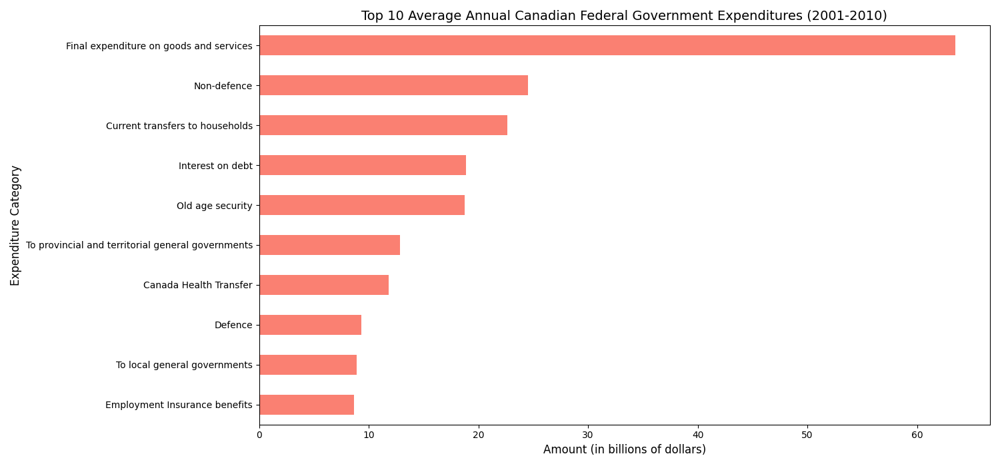
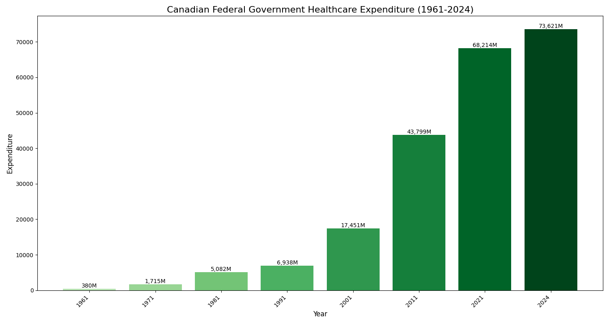
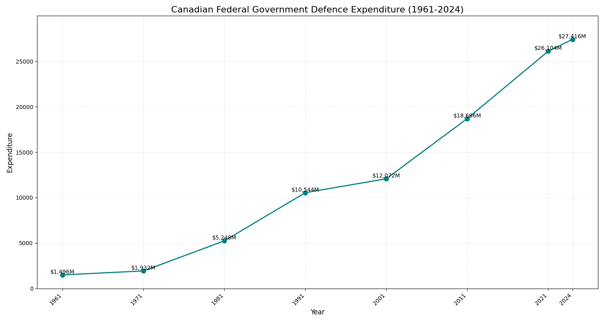
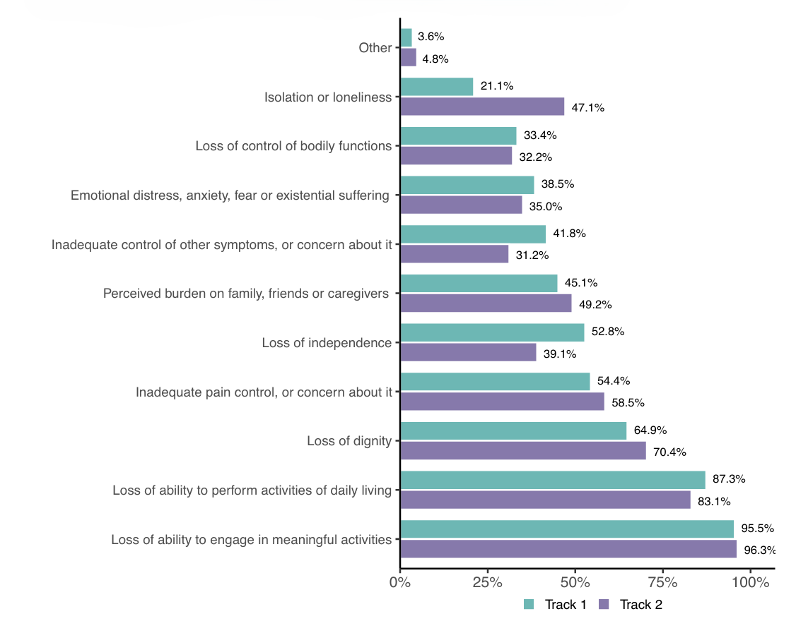

Analysis & Report
Chapter 1: Introduction
A nation's budget is more than a list of numbers.
It is a narrative of its values, challenges, and aspirations.
The federal government's financial decisions serve as a foundational document for this report's research, outlining the strategic allocation
of public funds to support the country's social, economic, and institutional goals. Over time, shifts in how a country spends its money can reveal
fundamental changes in its values and the challenges it faces.
The goal of this project is to analyze the trends in Canadian federal government spending, revenue, and budgetary balance over several decades.
Rather than attempting to find a broad, random relationship across all datasets, this analysis will focus on a specific sector to uncover a clear,
compelling story within the data.
From my analysis, I was most interested in the healthcare industry. Over the past several decades, federal spending on healthcare has undergone a
drastic transformation, emerging as a dominant and growing area of expenditure. After examining this specific trend, I have explored key factors
driving these changes and provided a detailed review of Canada's evolving healthcare system. The following chapters will answer specific questions
about this trend, using visualizations to highlight the story of how healthcare spending has evolved into one of the most significant and consequential
components of the federal budget.
I would like to issue a disclaimer that none of these correlations can be considered statistically significant,
as I have not developed a proper hypothesis or calculated this possibility. Everything is based on inferred statistics and research correlations.
Chapter 2: Following the Money
Because there is so much data dating back decades, I wanted to simply start breaking down the data by trying to get small snippets of certain
scenarios by asking myself questions. To begin, I wanted to identify the largest areas of federal spending over time to establish a clear view
of national priorities. I decided to do this by finding the top 10 average annual federal government expenditures for each decade.
This federal focus provides a consistent, manageable dataset and offers the clearest indicator of Canada's overarching spending priorities.
This approach helps to simplify the vast dataset and provides a clear starting point for a more focused analysis.
First, using data from the Statistics Canada database on all federal government expenditures,
I filtered the dataset to include only the years from 1961 to 1970.
- - I then calculate the average expenditure for each category over that decade.
- - Then I rank them to find the top 10.
- - Then I plot the chart showing these average annual values.
To showcase how spending priorities have evolved over time, I have included graphs for three distinct decades: the initial period of 1961-1970, the late 20th century in 1991-2000, and the most recent data from 2021-2024. This can allow for a clear comparison of long-term trends.
  
The graphs reveal several consistent patterns. As expected, Goods and Services consistently rank as a top expenditure. We also see the regular presence of Defence-related expenses and Old Age Security, which reflect our long-standing priorities in Canadian society.
However, two specific findings stand out to me.
First is Employment Insurance (EI). EI spending does not appear on the top 10 list from 1961-1970, even though the program had been in place for decades. This can be attributed to several factors. In the booming post-war economy, a consistently low unemployment rate meant fewer people needed to claim benefits (Viprey, 2008). Furthermore, the original program was founded on insurance principles and had a limited scope, excluding many types of workers, which restricted its usage (Viprey, 2008).
Beyond these factors, this trend also reflects the cultural and communication differences of the era. During this time, immediate access to information primarily involved newspapers and radio, meaning public awareness of government services like EI may not have been as widespread, which could have then influenced the program's usage and overall expenditure. This period, particularly the 1960s, was a time of significant social and economic change due to the rise of a new generation, which we call the Baby Boom. These shifts, alongside powerful social movements, have led to a reevaluation of the government's role in society. Ultimately, the 1971 reform to the EI program, which broadened its coverage and made eligibility easier, was a direct outcome of these broader social and political conversations (Lin, 1999).
Secondly, and more central to my report's focus, is the emergence of healthcare spending as a top-tier government expenditure. Looking closely at the data from 1961-2000, you'll see the first appearance of the "Canada Health and Social Transfer" (later renamed and separated to the "Canada Health Transfer" or CHT). The gradual but significant increase in this expenditure category is a trend that sets the stage for our deeper analysis.
Please look at these graphs below:  
With this data, I want you to pay attention near the bottom of the graph. While some expenditures remain consistent, the 1990s marked the emergence of a new federal priority. As expected, we can see in the the graph for the 1991-2000 period, it reveals the first appearance of a major expenditure labelled the 'Canada Health and Social Transfer' (CHST). Specifically, this first appeared in the 1995 federal budget and was actually in effect during 1996-97 (Canada, 2000). This new transfer was a block fund that combined two previous programs: one for health and post-secondary education and another for social assistance. Its appearance here potentially highlighted a fundamental shift in the federal government's fiscal strategy (Madore, 2003).
Here are the graphs to show what I'm talking about: 
The first notable trend in this data is that the CHT surpassed defence and local government expenses for the first time. This is significant as it tells us that healthcare is an emerging role as the dominant area of federal program spending. This growth was potentially due to renewed political and social emphasis on healthcare following a period of fiscal strictness in the 1990s. The federal government, under Prime Minister Jean Chrétien and his successor Paul Martin, began to make significant new investments in the healthcare system, leading to a series of federal-provincial agreements and a substantial increase in CHT funding (Lafleur, 2016).
In this timeline, we can see that CHT has gone up significantly in 10 years on average. The trend of rising CHT expenditures accelerated in the following decade. This is further evidenced by the 2011–2021 data, which shows CHT spending increasing dramatically, from an average of roughly $12 billion to $22 billion over the decade. This growth is not simply a function of inflation or population increase; it's also a reflection of several key factors. First are demographics, I believe the aging Baby Boomer generation is the start of the most impactful piece that began to place increasing demands on the healthcare system as they entered their senior years. This shift will continue to flow as our technology continues to exist. demographic shift that will continue to drive costs. Second, the emergence of new and often expensive technologies like MRI machines and cutting-edge pharmaceuticals contributed to the rising costs of treatment (Hasan, 2023). Finally, the increasing prevalence of chronic diseases like diabetes and heart disease meant more Canadians required long-term care and management, driving up costs over time (Hasan, 2023).
Now I would like to note something important. While the use of decade averages is useful for highlighting a macro trend, it's important to recognize that these figures can mask significant year-to-year changes. For example, costs could have been lower at the beginning of a decade and much higher at the end. I am aware of this but the primary goal of these graphs is to illustrate a clear, long-term pattern: the continuous and accelerating rise of health care as a major and increasingly dominant federal expenditure.
Now we are here, the graph for the 2021-2024 period. Despite its short duration, it continues to show this trend as expected. Now, I would like it to be clear that increased spending is not inherently "bad". However, it does raise important questions about the sustainability of the healthcare system and its impact on other areas of the federal budget. In fact, I theorize that it may have been a large oversight and this may be affecting the world as a whole. That last part is outside the scope of this project, but we will return to why this is becoming unsustainable in the report.
Now, I want to show a comparison with a different industry to demonstrate the magnitude of healthcare expenditures. The comparison I chose was the defence industry. I chose this industry because it represents both core and distinct national priorities. Defence spending is often viewed as a measure of a country's external security and global role, while healthcare spending reflects its internal social policy and well-being. By contrasting these two, I can show how the nation's priorities have shifted from a more militaristic focus in the mid-20th century to a social welfare focus in the modern era.
But before we take a look at the defence industry, let's look at the healthcare industry's total expenditure over the entire period of data I have. In calculating the healthcare expenditure, the variables I included were ‘Hospital insurance’, ‘Medicare’, ‘Extended health care’, ‘Canada Health Transfer’, ‘Canada Social Transfer’, and ‘Canada Health and Social Transfer’.

First, I am now showing more exact values of each year's expenditure. We can see that in 1961, we only spent about $380 million on healthcare. If we fast-forward to 1991, we can see it's now about $6.938 billion on healthcare. The jump from 1961 to 1991 is about $6.558 billion. Now let's compare 1991's spending vs. 2021's spending; I believe this comparison is a good idea of how technology has expanded and affected many sectors exponentially since the 1990s to the present day. In 2021, the federal government spent $68.214 billion on healthcare. The difference is $61.276 billion! This is nearly 9 times more spent comparing these two segments of decades!
Now there are many reasons for this. Other than the demographics and technological advancements, the expansion of services in the healthcare system continues to include a wider range of services over the decades. Another obvious reason that I went over earlier was inflation. This ties into labour costs as the rising compensation for healthcare professionals has also contributed to the overall increase in spending.
Now, let's take a look at the defence spending.

First, the most interesting variable I noticed was that in 1961, we have spent about 5 times more on defence than on healthcare during this time. This can be due to many reasons, such as the Cold War. The defence policy was also closely aligned with NATO and NORAD (North American Aerospace Defence Command). During this time there were substantial investments in military equipment and personnel to counter the Soviet Union. Now, looking at the times around the late 1970s and 1990s, we can see that the expenditure increased by around 5 times (In contrast, health expenditure was only 4 times). We can see a sharp decline in additional expenditure in the late 1980s to 1990s, likely due to the Cold War ending after the collapse of the Soviet Union in 1991. Beyond this, in 2001 to 2021, defence spending has shifted back to significant increases in response to many important global events such as 9/11 and our participation in the Afghanistan war. In addition, because we are part of NATO, there was growing pressure to spend at least 2% of GDP on defence in which we have continuously failed to meet, but it is still noteworthy in how its spending has been influenced (Brewster, 2023).
To reiterate, the core purpose of this analysis is to show that both healthcare and defence expenditures have increased for reasons that go far beyond simple factors like inflation or population growth. Each industry has its own unique story, driven by distinct political, cultural, and global events. So allow me to be clear with the goal of this project after this chapter. My goal is to also showcase the healthcare side of the expenditure story right now. So in the next chapter, I will discuss what's going on in the healthcare industry, and how emergency room wait times and healthcare employees have been looking in recent years (and more).
Chapter 3: The State of Canadian Healthcare
The previous chapter has shown how federal government spending on healthcare has increased dramatically over the decades, becoming a
dominant component of the budget. However, this exponential growth in expenditure has not solved the system's core challenges.
This chapter will move beyond the financial data to examine the current situation and tangible impacts on the Canadian healthcare
system and the citizens it serves. I investigated the growing pressures on the system by focusing on three key issues: The prolonged
Emergency Room wait times, the crisis surrounding healthcare worker staffing and morale, and persistent challenges related to access,
including mental health services and rural and remote care.
...
Despite the significant increase in federal healthcare spending, ER wait times and overcrowding remain a persistent and critical issue across
Canada. I have collaborated with Glory Nwokeji and incorporated all her research, summarized on this issue. To learn more, please visit
the credits page and contact her for more information.
There has been a steady increase in ER wait times across Ontario, Quebec, and Saskatchewan. This issue is not isolated to those provinces;
it's a systemic problem with multiple connected causes.
One of the primary drivers of long ER waits is a lack of hospital beds. Glory identified that an aging population has increased the demand
for beds, while the number of beds has not kept pace. For instance, the number of hospital beds per 1000 people in Ontario decreased from
2.28 in 2022 to 2.23 in 2024. This has created a domino effect, where patients who are waiting for a bed in a ward get stuck in the ER,
which in turn prevents new patients from being moved from the waiting room to an ER bed. This bottleneck increased wait times dramatically;
see details below.

The average time spent getting an inpatient hospital bed in Ontario increased from 7.8 hours in 2013 to 13.5 hours in 2023. The average
wait time for non-admitted patients in the ER also rose from 3.2 hours in 2013 to 4.2 hours in 2023. This has led to patients being treated
in hallways or simply leaving without being seen.
This problem is worsened by the continuous shortage of healthcare workers, especially nurses. The Canadian Medical Association (CMA)
has warned that staffing shortages, coupled with overcrowding and inadequate access to primary care, have left ERs unprepared to handle
the surge of patients. This has led to temporary closures of emergency departments, which have also likely contributed to burnout amongst
staff who are already overworked. See details below.

Although the healthcare worker count has increased significantly in Ontario, the overall ratio of healthcare workers to residents decreased
from 1:17 in 2013 to about 15.6 in 2023. In contrast, Quebec has seen a steady increase in the proportion of workers leaving the profession,
with 42% reportedly considering leaving. This is possibly why Quebec had the highest average ER waiting time among the provinces studied.
Now, the issues of hospital bed shortages and under-resourced emergency departments are tied to a broader and more severe problem:
the crisis affecting healthcare worker staffing and morale. This continuous drain on the system has put immense pressure on those who remain,
leading to a cycle of burnout, dissatisfaction, and continuous departures. This next section will delve deeper into this crisis, examining the
key factors contributing to the exodus of nurses and other healthcare professionals from the Canadian system.
...
Long ER wait times, overcrowding, and a lack of hospital beds are fundamentally tied to a broader crisis of healthcare worker staffing and morale.
For many healthcare professionals, events like the COVID-19 pandemic exacerbated long-standing issues, pushing them to their limits.
A recent national survey by the CUPE found that a significant majority of hospital workers feel understaffed, overworked, and disrespected,
leading to a high sense of despair and frustration (Canadian Union of Public Employees, 2024).
Reiterating the shortage crisis of healthcare workers, this is beyond the numbers; it has become a vicious cycle. When there is a scarce amount of
staff, the remaining workers are forced to take on heavy workloads, often working mandatory overtime (Canadian Union of Public Employees, 2024).
This is the common reason why people feel burnt out. A Statistics Canada report notes that in the first quarter of 2023, job vacancies for registered
nurses and registered psychiatric nurses increased by nearly a quarter from he previous year. This was the highest numerical increase among all
occupations across the labour market (Statistics Canada, 2023).
This constant pressure obviously compromises both the workers’ well-being and the quality of patient care. A study from CMA found that many
family physicians are seeing fewer patients per year and spending too much time on administrative work, which has contributed to their heavy
workloads and desire to leave the profession (Canadian Institute for Health Information, 2024). The lack of adequate support and resources can
lead to moral injury. This means healthcare workers will be unable to provide the standard of care they know their patients deserve due to
systemic constraints like the aforementioned problems mentioned before. A survey of Canadian healthcare workers revealed that 44$ were considering
leaving their jobs, with a key factor being “moral injury due to trust violation” (Nazarov et al., 2024).
As I’ve covered, this is more than a problem of insufficient resources; it is a human crisis where overworked staff are pushed to the brink.
The challenges I have discussed are not everything. Another challenge that is also connected to all this and has never been more prevalent and
addressed than ever before in history, are the hurdles that persist in securing mental health services and receiving adequate rural and remote care.
...
Despite the growing awareness of mental illness, a large gap exists between the need for mental health care and its availability.
A report published on CIHI indicated that while several Canadians reporting a need for mental health care has risen, a quarter of those
with a diagnosed mood or anxiety disorder have unmet or only partially met needs (Canadian Institute for Health Information, 2023).
Some reasons include cost, stigma and mental health literacy, and other systemic gaps.
For many, the cost of therapy and counselling services (which are often not fully covered by public health plans) have been a
significant barrier to access. A study in the Journal of Mental Health found that the affordability of treatment is a major concern
for many young Canadians (Canadian Institute for Health Information, 2024b). Stigma has always persisted as a deterrent, with many feeling
uncomfortable or even unsafe discussing their mental health with providers (Mental Health Research Canada, 2023). Additionally, a lack of
mental health literacy means many individuals do not know where to find services or what symptoms warrant seeking help
(Mental Health Research Canada, 2023). The mental health system is currently fragmented, with long wait times for this specialized care.
A CBC news report highlighted that black youth in Canada face problems such as racism, which has been linked to longer wait times in accessing
mental health care compared to white peers (Ireland, 2024).
I would also like to go over the topic of MAID in Canada. MAID was introduced for those with a ‘reasonably foreseeable natural death’.
The law was expanded in 2021 to include individuals with serious and incurable conditions whose death is not imminent. This expansion has
led to a national debate and raised serious concerns, particularly when MAID is requested by individuals whose primary sources of suffering
are linked to poverty and a lack of social supports.
Between 2016 and 2022, nearly 45,000 Canadians died by MAID, with a notable increase of 31.2% from 2021 to 2022 alone. While the majority
of these cases are related to a terminal diagnosis like cancer, there is a growing trend of MAID requests from people whose suffering is
tied to their socioeconomic circumstances. A report from Inclusion Canada noted that in 2022, at least 49 individuals who died by MAID
could not access necessary disability supports, and roughly one in three people who chose MAID reported feeling like a burden to others
(Inclusion Canada, 2022).
Some additional information on MAID below:

In this graph, it is going over individuals who have been administered MAID, but separated into two tracks. The first track goes over
individuals whose natural death was reasonably foreseeable, and the second is whose death was not reasonably foreseeable.
We can see that most of these are about equal. However, we can also see at the top that isolated and lonely individuals have been
administered MAID without reasonably foreseeable death circumstances (Government of Canada, 2024). This is a very frightening statistic
that shows it is very likely that this could have been solved without MAID if given the proper resources. In addition, although most of
these values from both tracks are equal, we still want track two to be as minimal as possible, yet it is not.
The legal expansion of MAID to include mental illness as a sole underlying condition has been a highly controversial issue,
and justifiably so. One of the key points of concern includes the difficulty of distinguishing between a suicidal crisis and
a rational request for MAID, as well as the potential for vulnerable individuals to choose MAID simply because they lack access
to adequate housing, mental health support, or other social services. These laws are very likely to put people with disabilities
and other disadvantaged groups at risk.
Continuing the topic of access to care, the ease of access has obviously not been evenly distributed across Canada, largely due to our landmass,
but it is much more complicated than this. Healthcare access for roughly 20% of Canadians living in rural and remote areas is a persistent challenge
that is often described as an ‘urban versus rural’ two-tiered system (Laurent, 2002).
One of the reasons for this issue is the physician shortages. The uneven distribution of healthcare professionals is particularly acute in
rural areas. In a report by the RBC, it details that while nearly a fifth of Canada’s population lives in rural communities, only 8% of
physicians serve them. As mentioned earlier, residents in these communities often face long travel times to access specialized services and
sometimes even basic hospital care (Rural Ontario Municipal Association, 2024). The centralization of health services and closure of rural
hospitals have further exacerbated this issue (Laurent, 2002). Because of this, people residing in these areas have even higher rates of timely
care, which will also lead to increased reliance on emergency departments, which are often already understaffed, as mentioned before
(Canadian Institute for Health Information, 2025).
...
Many of us Canadians understand that the challenges facing Canadian healthcare have been problematic for decades now. These issues are deeply
human for all of us and have been failing to support both patients and providers.
My final chapter will shift our focus into the light; I will discuss potential solutions that may help rebuild our healthcare system
so we can ensure a more sustainable and accessible future for all Canadians.
Chapter 4: Solutions for the Future
The exponential growth in expenditure has not alleviated the burdens that the healthcare sector is facing.
The crucial next step is to explore and implement effective solutions. This chapter will outline multiple potential approaches I believe we can manage.
First, federal and provincial governments are trying to shift their focus from broad spending to targeted, strategic investments.
A key initiative is the move towards team-based care. This model is where a patient is served by an integrated group of professionals,
including doctors, nurses and social workers. This is fundamentally different from the traditional single-physician model.
It’s essentially like a pit crew in an F1 race. So instead of relying on one person to do everything, a coordinated team of specialists
works together to provide comprehensive and efficient care (Flood et al., 2023). There have been recent agreements, such as the $3.1 billion
investment in Ontario, which have been implemented to fund and expand these teams, aiming to reduce ER backlogs and improve patient access
(Flood et al., 2023).
Governments have also been trying to implement a three-pronged approach centred on recruitment and retention. Financially,
provinces are receiving federal funds to support wage increases for personal support workers (Prime Minister of Canada, 2024).
From the human resources perspective, there have been ongoing efforts to expand enrollment in healthcare education by over 700 spots,
which includes over 70 in Northern Ontario. (Prime Minister of Canada, 2024). To continue supporting these workers, the system itself is being
‘modernized’ with investments in digital health tools, like electronic health records, which can help streamline information sharing and
reduce the administrative burden on overworked staff (Queen's Law, 2024).
Governments are also aware and implementing solutions to address inequities in mental health and rural care. Targeted funding is being
allocated to support mental health and substance use services, with a specific focus on developing culturally safe care for Indigenous populations
(Prime Minister of Canada, 2024). In remote communities, the expansion of telehealth and virtual care is quoted as ‘proving to be a game-changer’.
This approach is similar to modern online banking, which brings financial services to people regardless of their physical location.
Telehealth makes it possible for patients in rural areas to consult with specialists without having to endure long, costly travel times
(Prime Minister of Canada, 2024).
...
While government action is the most important, the responsibility for improving healthcare for all strictly for the government to handle.
Us citizens have more power than we may think. One of the most impactful ways is by improving health literacy and embracing self-care. Services
like Health881 in Ontario empower citizens to make informed decisions about their health, helping them determine if their needs can be met by a
clinic or pharmacist rather than contributing to ER overcrowding. Once people have better health literacy, it is a good preventative maintenance
for their own body as well as others if shared. A simple act of having open conversations about mental health—even if you slightly suspect someone
needs to converse with you about it can help dismantle the stigma that prevents so many from seeking the care they need.
Beyond self-care, we are powerful advocates for systemic changes in all topics. Public engagement is a key driver for accountability and
innovation. By participating in public forums and events, we can ensure our voices and priorities are heard by decision makers.
This includes advocating for better working conditions fo healthcare professionals, whose morale and well-being are directly linked to the
quality of patient care. Organizations like the CPHA provide a platform for collective action, allowing individuals to support evidence-based
policies and hold governments accountable for the outcomes of their healthcare strategies.
...
Our healthcare system is at a critical point, and the challenges we have been facing in the past decade cannot be ignored.
Despite all this, the only way is forward from here if we want to save Canada. It will require collaborative efforts from both the governments
and citizens. By investing in modern technology, team-based care models and more, we can start healing the system. And to prevent the blood loss,
we can contribute by embracing health literacy, practicing preventative care and being vocal advocates for the changes we wish to see.
Together, we can move beyond our struggles and continue to work towards providing timely, high-quality care for all.
Chapter 2: Definitions
Key Terms
Federal Government Expenditures: This refers to all the money the Federal Canadian government spends on its programs, services, and operations. Think of it like a household budget, but on a national scale. It shows where the country's money is being directed.
Employment Insurance (EI): A program that provides temporary financial assistance to Canadians who are out of work through no fault of their own.
Canada Health Transfer (CHT): A federal transfer payment to provinces and territories to help fund healthcare services. It's essentially the federal government's way of sending money to provincial governments to support healthcare.
Block Fund: A single, lump-sum payment from the federal government to the provinces and territories that can be used for a broad range of services, rather than being restricted to one specific area. The
Canada Health and Social Transfer (CHST): was a block fund that combined funding for health, post-secondary education, and social assistance.
Inflation: The general increase in prices for goods and services over time. As inflation rises, the same amount of money buys less than it used to. This is a factor that increases government spending.
Abbreviations
EI: Employment Insurance. This program provides temporary financial help to Canadians who have lost their jobs through no fault of their own. The original program had a limited scope and did not appear on the top 10 expenditure list for 1961-1970, which was partly due to a low unemployment rate and cultural factors at the time.
CHST: Canada Health and Social Transfer. This was a block fund created in the 1995 federal budget that combined two previous programs: one for health and post-secondary education, and another for social assistance. Its emergence marked a major shift in the federal government's fiscal strategy and a new federal priority in the 1990s.
CHT: Canada Health Transfer. After the CHST was separated, the CHT became the specific block fund for health-related expenditures. The gradual but significant increase in spending through this transfer sets the stage for a deeper analysis of healthcare spending.
NATO: North Atlantic Treaty Organization. This is a military alliance. Canada’s defence policy in the 1960s was closely aligned with NATO.
NORAD: North American Aerospace Defence Command. This is a joint military organization between the United States and Canada. During the Cold War, there were substantial investments in military equipment and personnel to counter the Soviet Union, and NORAD played a key role in Canada's defence policy.
GDP: Gross Domestic Product. It is a measure of the total value of goods and services produced in a country. NATO members are pressured to spend at least 2% of their GDP on defence.
Chapter 3: Definitions
Key Terms
Emergency Room (ER) Wait Times: The amount of time patients have to wait before they are seen and treated in an emergency department. Long wait times are a persistent issue in Canadian healthcare.
Moral Injury: This is the psychological distress and lasting emotional pain that healthcare workers experience when they are unable to provide the standard of care they know their patients deserve due to systemic problems. It's like a mental wound caused by a "trust violation".
Mental Health Literacy: This refers to an individual's knowledge and beliefs about mental disorders which helps them recognize, manage, or prevent them. A lack of this understanding can prevent people from knowing where to find help or what symptoms require professional care.
MAID: Medical Assistance in Dying. This is a legal procedure in Canada that allows a person to end their life with the assistance of a medical professional. It was initially for those with a "reasonably foreseeable natural death," but the law was expanded to include those with serious conditions that are not immediately life-threatening.
Rural and Remote Care: This refers to healthcare services provided to Canadians living outside of major urban centers. These areas often face challenges like physician shortages and long travel times to access services, creating a two-tiered system compared to urban areas.
Abbreviations
ER: Emergency Room. This is a hospital department that provides immediate treatment to patients with urgent medical conditions.
CMA: Canadian Medical Association. This is a national association that represents physicians across Canada. The CMA has warned about staffing shortages and other issues affecting ERs.
CUPE: Canadian Union of Public Employees. A recent survey by this union found that many hospital workers feel understaffed, overworked, and disrespected, which has led to low morale and burnout.
CIHI: Canadian Institute for Health Information. This is an independent, not-for-profit organization that provides essential data and analysis on Canada's health system.
RBC: Royal Bank of Canada.
Chapter 4: Definitions
Key Terms
Team-Based Care: This is a model of healthcare where a patient is cared for by a group of professionals, including doctors, nurses, and social workers. It's like a pit crew in a race, where a coordinated team of specialists works together to provide efficient and comprehensive care instead of relying on just one person to do everything.
Electronic Health Records: These are digital versions of a patient's medical history. They help to streamline information sharing and reduce the administrative burden on healthcare staff by keeping all patient information in one place.
Telehealth/Virtual Care: This involves providing healthcare services to patients remotely, usually through digital communication tools. This approach is "proving to be a game-changer" for people in rural areas, as it allows them to consult with specialists without having to travel long distances.
Health Literacy: This refers to an individual's ability to find, understand, and use health information to make good decisions about their well-being. When people have better health literacy, they are more empowered to make informed decisions about their care, like knowing whether to visit a clinic or a pharmacist instead of an emergency room.
Self-Care: This involves taking deliberate steps to protect one's own physical and mental health. The report suggests that self-care is a powerful form of preventative maintenance for your body.
Abbreviations
CPHA: Canadian Public Health Association. This organization provides a platform for individuals to take part in collective action, advocate for evidence-based policies, and hold governments accountable for healthcare strategies.
Chapter 2: Sources
Pastebin
All sources are cited in APA 7 (American Psychological Association 7th edition)
Chapter 3: Sources
Pastebin
All sources are cited in APA 7 (American Psychological Association 7th edition)
Chapter 4: Sources
Pastebin
All sources are cited in APA 7 (American Psychological Association 7th edition)